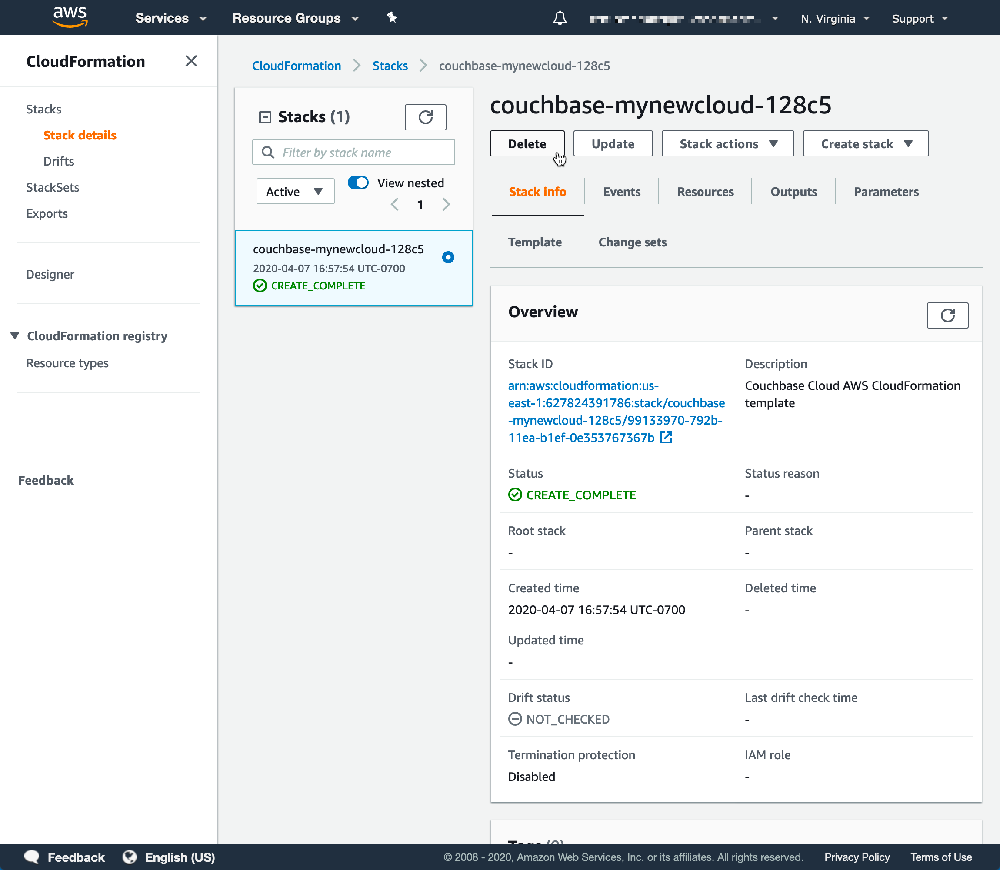
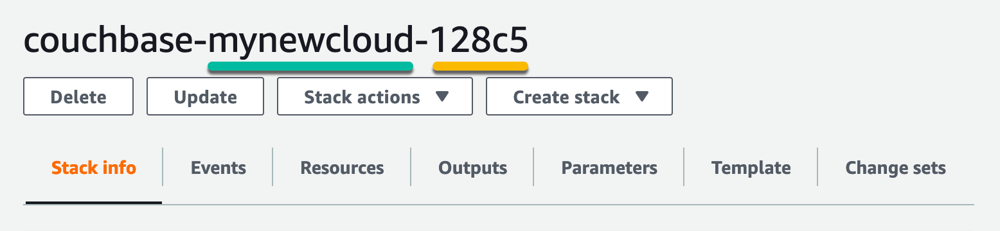
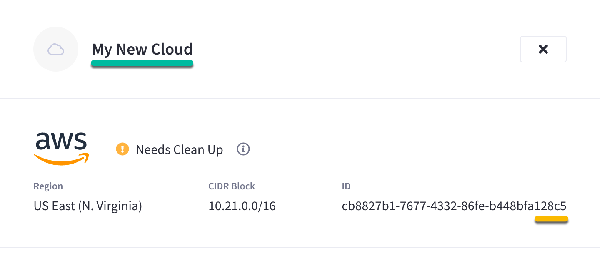

Connect and Manage Clouds
Connect clouds so that users in your organization can deploy clusters.
|
This information is for anyone still using Couchbase Server 6.6, hosted in their own cloud provider’s VPC. It does not apply to Couchbase 7.0, hosted in Couchbase’s VPC and fully managed for you. For further information contact Couchbase. The easiest way to get started with Capella, our fully managed DBaaS, is hosting in Couchbase’s Cloud. |
Couchbase Capella needs to create a connected cloud environment within your existing cloud provider account in order to provision the resources that your cluster will run on. This means that you’ll need to connect your own cloud provider to Couchbase Capella before you can start deploying clusters.
Accessing Clouds in the Capella UI
Connected clouds can be viewed and managed from the Clouds tab in the main navigation. A summary of all the connected clouds in your organization is displayed in table format.
Connected clouds can be viewed by all users in an organization.
Clouds Summary
The Clouds tab shows a summary of all the connected clouds in the organization. The summary is displayed in table format, with sortable columns and a row for each connected cloud. A search field is provided at the top of the summary, which you can use to search for any term or value that is listed in the summary table.
The clouds summary displays the following information about each connected cloud:
- Name
-
The name of the connected cloud.
- Status
-
The status of the cloud connection.
- Provider
-
The public cloud provider that is being used for the connected cloud.
- Region
-
The region of the public cloud provider where the connected cloud is deployed.
- CIDR Block
-
The CIDR block of the connected cloud, which was specified when the connected cloud was initially configured.
A Trash icon is displayed at the end of each row, which can be used to delete the cloud.
Connect a Cloud
To connect a cloud:
-
You must have the
Organization OwnerorCloud Managerorganization role. -
You must have a supported cloud provider account
-
The account must have sufficient permissions and quotas for Capella to create a VPC and provision the necessary resources for the data plane.
-
The account must have the ability to pay for compute and infrastructure costs.
-
Procedure
-
From the Clouds tab, click Connect Cloud.
This opens the Connect Cloud fly-out menu.
-
Enter the cloud connection details.
In the Connect Cloud fly-out menu, configure the following cloud connection details:
- Service Provider
-
Select your cloud provider from the drop-down list.
- Cloud Name
-
Enter a name for the connected cloud.
This is the name that users in your organization will see in the Capella UI, both in the Clouds tab, and when deploying clusters. It can be helpful to use a descriptive name so that other users can easily identify the connected cloud. - Available Regions
-
Select a cloud provider region from the drop-down list. This is the region in your cloud provider where Capella will set up a VPC environment. All clusters that use this connected cloud will be deployed in the selected region.
- CIDR Block
-
Enter an IP range in CIDR notation. Capella will use IPs in this range for deployed resources. Unless you plan on configuring a peering connection between your Couchbase cluster and your application server, you can feel free to accept the default CIDR block.
If you do plan on configuring a peering connection for any of the clusters deployed on this connected cloud, then you must ensure that the CIDR block you enter does not overlap with the CIDR block of your application server. If you don’t know the CIDR block of your application server, or if you’re unsure whether or not you will need to configure a peering connection in the future, you can still move forward using the default CIDR block and just connect another cloud using a different CIDR block should it be necessary in the future.
-
Once you’ve configured the required fields, click Connect Cloud.
Your cloud provider’s console will open in a new browser tab. If the console doesn’t open, make sure that your browser is configured to allow pop-up windows from Capella and then try clicking the button again.
-
Log into your cloud provider using an account that has sufficient privileges and capabilities for deploying Capella resources.
-
Deploy the stack template.
After logging into your cloud provider’s console, a pre-configured resource template will be displayed in the region that you specified. This template contains the necessary configuration for Capella to be able to connect to your cloud provider and deploy a VPC under your account.
For AWS, the resource template will be in the form of a CloudFormation template:

You must deploy the template to continue. In the case of AWS, deploy the template by checking the box labeled I acknowledge that AWS CloudFormation might create IAM resources with custom names and then clicking Create stack.
Couchbase Capella provisions and maintains VPC resources in your cloud provider account for each connected cloud. These resources will incur a nominal infrastructure cost in your cloud provider account for the lifecycle of the connected cloud. Once the stack begins to deploy, return to the Capella UI. (It’s safe to close your cloud provider console, but you may need to return to it should any issues occur during the connection process.) The connection details in the Connect Cloud fly-out menu will indicate that Capella is waiting for your cloud provider. Once the basic stack deployment is complete, and the initial connection is established, a series of status bars will appear, each representing a different step in the VPC deployment process.
For AWS, the basic stack deployment process takes around 10 minutes to complete. If after 15 minutes Capella still hasn’t received a connection attempt from your cloud provider, the connection will time out. If this occurs, refer to the troubleshooting note below.
You’ll know that the entire VPC deployment was successful once all of the steps are complete, and the Connection Status changes to Connected.
 Troubleshooting Failed Connections
Troubleshooting Failed ConnectionsIf the basic stack deployment takes longer than 15 minutes, Couchbase Capella assumes the operation has failed and will time out the connection. If no specific error is reported in the Capella UI, it can occasionally be the case that cloud provider performance is to blame, and simply retrying the connection will solve the issue. However, the most common issues that occur with connecting a cloud are caused by the cloud provider account not having adequate permissions and quotas for deploying the basic stack and associated VPC resources.
If an error or timeout occurs before the cloud connection status bars appear in the Capella UI, then it’s likely that a permissions issue caused the basic stack deployment to fail. If this is the case, then you will need to inspect the stack within your cloud provider console to determine which permissions issues caused the error.
However, if the cloud connection status bars have already appeared in the Capella UI, it means that the basic stack deployment was successful, and any further permissions or quota issues will be related to the deployment of VPC resources and will be reported in the Capella UI. Should an issue be reported that halts any of the status bars, Capella will re-attempt deployment every five minutes for five days.
Refer to Cloud Provider Requirements for details about the specific account permissions and quotas that are required by Couchbase Capella.
Once you’ve successfully connected a cloud, anyone in your organization with the Project Owner or Cluster Manager roles can select that cloud for deploying a cluster.
Modify a Connected Cloud
Once a connected cloud is created, it cannot be modified. If you need to change a connected cloud’s configuration, such as changing its name, region, or CIDR block, you must create a new connected cloud with the desired configuration.
Delete a Connected Cloud
Deleting a connected cloud securely deletes all resources associated with your cloud connection.
To delete a connected cloud:
-
You must have the
Organization OwnerorCloud Managerorganization role. -
You must have deleted all clusters on the connected cloud. (Capella does not allow a connected cloud to be deleted if clusters are present.)
| Deleting a connected cloud will delete all cluster backups that remain in the connected cloud VPC. For more information, refer to Backup and Restore Cluster Data and Settings. |
Procedure
-
From the Clouds tab, find the cloud that you wish to delete.
-
Click the Trash icon at the end of the row on the right side.
Note that if there are any remaining clusters in running on the connected cloud, the Trash icon will be disabled. Once you have deleted all remaining clusters from the connected cloud, the Trash icon will be enabled.
-
When prompted to confirm the deletion, type out the name of the cloud and click Confirm.
The fly-out will close and the first step of the deletion process will begin. Deleting a connected cloud is a two-step process. This first step of the deletion process takes a few minutes, after which the connected cloud’s status will change to Cleanup Required. When this occurs, move on to the next step.
-
Finish cloud cleanup.
In the previous step, all of the resources associated with the connected cloud were deleted, except for the cloud stack that was used to establish the initial connection. When the connected cloud’s status changes to Cleanup Required, the cloud stack itself is ready to be deleted in your cloud provider.
-
Once the connected cloud’s status changes to Cleanup Required, find it in the Clouds tab and click on its row.
This open’s the connected cloud’s fly-out menu.
-
In the connected cloud’s fly-out menu, click Complete Cloud Cleanup.
Your cloud provider’s console will open in a new browser tab. Note that you may need to configure your browser to allow pop-up windows from Capella.
-
Log into your cloud provider using the same account that was used to connect the cloud in the first place.
-
For AWS: The final resources are contained in the connected cloud’s CloudFormation stack. This stack is automatically selected upon logging into the AWS console. To clean up the final resources, simply delete the stack.
To ensure that you’re deleting the correct CloudFormation stack, you can match the name of the stack with the name and ID of the connected cloud in the Couchbase Capella UI. The name of the stack will contain the name of the connected cloud, along with the last five characters of the connected cloud’s ID.
Match the name of the CloudFormation stack…
With the name and ID of the connected cloud…

-
After deleting the final resources in your cloud provider, the connected cloud will be removed from the Clouds tab in the Capella UI.